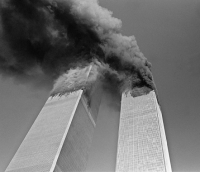

This learning object introduces critical information infrastructure protection (CIIP), which became a key part of national security policy during the late 1990s. We will then look at the reasons for the emergence of CIIP, before we move on to look at what the United States has done in this area, as the first country that addressed CIIP at the national level. We will then compare the protection policies of some countries, and look at some possible approaches to policy formulation.
When you have completed this learning object, you will understand how and why critical information infrastructure protection (CIIP) evolved as part of security policy. You will understand why CIIP originated in the United States and how other states have dealt with CIIP. You will be able to list the three main protection policy types. You will also know that the issues surrounding CIIP are understood and dealt with very differently by the various actors involved in CIIP.
We did find widespread capability to exploit infrastructure vulnerabilities. The capability to do harm — particularly through information networks — is real; it is growing at an alarming rate; and we have little defense against it.
This quotation is typical of the warnings made during the past decade about the security risks associated with the new information and communications technology (ICT). Many countries, concerned about the potential vulnerability of networked societies, have instituted measures to improve their understanding of the vulnerabilities of and threats to their (information) infrastructures and have proposed measures to protect these assets. These measures — countermeasures to the threat arising from ICT — are the subject of this learning object.
Strategies for protecting vitally important infrastructures and objects have been part of national defense plans for decades, although to varying degrees. Towards the end of the Cold War and for a couple of years after, the disruption of infrastructures by attacks was not a major consideration in the security debate, but it was starting to become one by the mid-1990s.
In the mid-1990s, the warnings about this new kind of threat to national security and to the very foundations of developed societies became increasingly common. The current emphasis on the protection of vital infrastructures was brought about by the so-called information revolution, which caused the transformation of all aspects of life through the widespread introduction of information and communications technology (ICT).
Initially, people were full of praise for the huge opportunities offered by our ICT age, also called the information age, and by the gradual transformation of parts of the global community into information societies. These days, society's dependence on ICT is causing concern.
This shift of focus is a by-product of the US-led revolution in military affairs (RMA). The new focus on infrastructure vulnerability came about in tandem with the development of offensive information operations capabilities and strategies in the US military. As the military began to look into the possibility of attacking the information systems of possible enemies, the possible dangers to its own military and civilian data networks became a major issue; information was no longer perceived as a lucrative weapon alone, but also as a target for a large number of malicious actors.
The fear of asymmetrical vulnerabilities is increasing, with the rapid spread of ICT on the global marketplace, the resulting "access by all" of information weapons, and the increasing dependency of modern societies on ICT. This fear of asymmetric threats originated in the United States, where observers fear that an enemy who could never win a battle against America's mighty high-tech war machine in any conventional conflict might instead strike at vital points in the US (either at a physical location or in cyberspace). The targets of asymmetric attacks, it is feared, are likely to be entities that are fundamental to US national security and to the functioning of its society as a whole — they are less likely to affect the military alone. We call these vital points critical infrastructures (CI).
CIs are information and telecommunications systems, financial services, energy and utilities services, transport and distribution systems, although various countries have different definitions of what constitutes their CI and may also include other infrastructures. These key sectors of modern society rely on a range of highly interdependent national and international software-based control systems. These systems support many elements of the CI, as many ICTs form part of overarching systems and connect various infrastructure systems with each other, making them interdependent. These infrastructures are the so-called critical information infrastructure (CII).
Information systems are vulnerable to faults, and they could therefore make good targets for malicious attacks. The CI delivers a range of services that individuals and society as a whole depend on. Any damage to or interruption of the CI causes disruption to various technical and societal systems — as experience shows. This vulnerability will only increase, along with the increasing interdependencies of such systems. Attacks of infrastructure, therefore, could have a "force multiplier" effect, that is, even a relatively small attack could achieve a significant impact.
Because critical infrastructures are so closely interlinked with each other, they do not necessarily need to be physically attacked to be damaged. They might also be targeted by electronic means. In the worst-case scenario, a concerted action by experienced hackers with hostile intentions could force a whole nation to its knees. This is a particular cause for concern, because in such attacks the enemy is a faceless and remote entity, an unknown quantity who is almost impossible to track and who fights against security institutions and laws that are ill-equipped to retaliate. At the same time, the overall capability of these actors to do harm is believed to be increasing as the tools they use are becoming less costly, more sophisticated, more easily available, and easier to use. This, in turn, explains why security specialists in many economically advanced countries have turned their attention to critical infrastructure protection (CIP) and critical information infrastructure protection (CIIP).
There is no clear and definitive distinction between the two key terms CIP and CIIP. In official publications, both terms are used inconsistently. Bear in mind that CIP is more than CIIP, but CIIP is an essential part of CIP: While CIP comprises all critical sectors of a nation's infrastructure, CIIP is a sub-set of CIP, as it refers to the information infrastructure alone.
- Critical Infrastructure Protection (CIP)
- CIP includes measures to secure all systems and assets which, if disrupted or destroyed, would have a debilitating impact on national security and the economic and social well-being of a nation.
- Critical Information Infrastructure Protection (CIIP)
- CIIP is a sub-set of CIP. CIIP refers to the protection of information systems and assets, including telecommunications, computers and software, the Internet, satellites, and fiber optic cables, and on interconnected computers and networks and the services they provide.
Before continuing, please complete the exercise below.
In the next section, we will look in more detail at the steps the US has taken to counteract the perceived threat against its critical (information) infrastructures.
It was the United States that first seriously addressed the issue of CIP and of CIIP. In 1996, former US president Bill Clinton set up a special study group, the Presidential Commission on Critical Infrastructure Protection (PCCIP), whose task was to deliver a comprehensive report on the security of all infrastructure systems in the US. This was a reaction to the Oklahoma City bombing of 1995 and to the general feeling that the US was becoming more and more vulnerable to international terrorism. Even though the PCCIP studied information and telecommunication networks, as well as the financial sector, the energy supply, transportation, and emergency services, the main focus was on cyber risks. There were two reasons for this. First, these risks were the least well known because they were so new, and second, many of the other infrastructures depend on data and communication networks.
The PCCIP consisted of representatives from all the relevant government departments — not only from the traditional security policy establishment. The private sector was also involved: Officials recognized that security policy in the ICT field could no longer be the duty of the government alone but was a shared responsibility, because the ownership, operation, and supply of critical systems was, and still is, largely in the hands of the private sector. Thus, the commission also allowed for solutions that went far beyond the core measures of security policy.
The PCCIP concluded in 1997 that the security, economy, way of life, and perhaps even the survival of the industrialized world are now dependent on electrical energy, communications, and computers. The commission found that advanced societies rely heavily upon critical infrastructures, and these are susceptible to classical physical disruptions and new virtual ones.
Following the publication of the PCCIP's report, Clinton initiated measures for increasing the protection of critical infrastructure in the US, under the premise that a joint effort by government, society, various organizations, and critical industries was necessary to prepare for threats to these vital assets. He established policy-making and oversight bodies, namely the National Infrastructure Protection Center (NIPC), located at the FBI, and the Critical Infrastructure Assurance Office (CIAO), thus making use of existing agency authorities and expertise.
- Law enforcement
- Private-public partnerships
- Private and public self-help
The plan has at its core a strategy of cooperation and information sharing based on partnerships between the infrastructure owners and operators and the appropriate government agencies. The plan is based on a strategy of preparation, that is, the preventive protection of critical infrastructures by technical means.
Under the presidency of George W. Bush, who came into office in January 2001, the basic ideas about how critical information infrastructures should be protected has remained the same.
However, the attacks of 11 September 2001 on the twin towers of the World Trade Center and the Pentagon led to the restructuring of the overall organizational framework of CIIP in the US. The most important change was the establishment of the Department of Homeland Security (DHS).

The attacks of 11 September 2001 changed security perceptions worldwide, and affected CIIP efforts as well. (Photo © Gulnara Samoilova / AP photos)The DHS consists of 22 previously existing agencies and has a staff of 180'000. With its creation Bush undertook the biggest administrative reorganization in the US since 1947. The DHS is responsible for identifying, averting, and/or annihilating terrorist offensives. It is also responsible for the rehabilitation of territory damaged or destroyed by terrorist attacks and natural disasters.
- Border and transportation security
- Emergency preparedness and response
- Science and technology
- Information analysis and infrastructure protection
- Management
- To develop a comprehensive national plan for securing the key resources and critical infrastructures of the US
- To provide crisis management in response to attacks on critical information systems
- To provide technical assistance and emergency recovery plans to the private sector and other government entities
- To coordinate with other government agencies to provide specific warning information and protective measures
- To circulate information on cyber-security to the private sector
- To fund research and development
The Directorate for Information Analysis and Infrastructure Protection (IAIP) is responsible for identifying and assessing current and future threats and vulnerabilities to the US homeland, issuing timely warnings, and taking preventive and protective action. The IAIP focuses particularly on the protection of critical infrastructure and cyber-security.
The IAIP puts a high priority on protecting the cyber-infrastructure from terrorist attacks whose possible consequences could affect many sectors and cause widespread disruption of essential services, damage to the economy, and a risk to public safety. Therefore, the IAIP brings together the key cyber-security activities that were built up under Clinton, such as the Critical Infrastructure Assurance Office (CIAO) and the National Infrastructure Protection Center (NIPC). Because CI relies heavily on information and telecommunications services and interconnections, the IAIP has also taken over the functions of the National Communications Systems of the Department of Defense, which had previously coordinated the emergency preparedness for the telecommunications sector, and some of the responsibility of the Energy Security and Assurance Program of the Department of Energy.
Before continuing, please complete the exercise below.
Now that we have looked at the US response to CI(I)P vulnerabilities, we now investigate other countries' responses to the CIIP threat.
Following the example of the PCCIP in the US, decision-makers in many countries launched initiatives for dealing with the new risks related to ICTs. This led to the establishment of interdepartmental committees, task forces, and working groups.
- Scenario work
- Evaluation of a variety of measures
- Assessments of early warning systems
Their work usually resulted in policy statements — for example, the recommendation that independent organizations be established to deal with information society issues — and reports that set out basic CIIP policies.
These days, most countries consider CIIP to be a national security issue. Some countries pursue a strategy that aims predominantly at making the most of commercial opportunities and that also ensures business continuity. Others take an approach that focuses on law enforcement and crime prevention. Civil rights groups are mostly concerned with data protection issues. While these approaches to CIIP can be found in all countries, the way various countries prioritize them is decisive. Most countries place the responsibility for CIIP with more than one authority and with organizations from different departments, involving many different individuals and bodies from different communities.
In France, New Zealand, and Sweden, CIIP resides mainly with the defense establishment, while in Britain and Switzerland, CIIP is the responsibility of the business community and public agencies. In Australia, the US, and New Zealand, CIIP is integrated into national counter-terrorism efforts, where the intelligence community plays an important role.
As we have seen, public-private partnerships are essential in CIIP. This means that there is a certain sensitivity about the allocation of responsibility for CIIP in the business sector: Private companies need assurance that their sensitive commercial and security information will be adequately protected, and many see few advantages in registering unusual occurrences with the authorities. Further, new organizations need to be able to provide a secure environment that adequately protects intelligence information to which such organizations must have access.
 For more information on CIIP, take a look at the
International CIIP Handbook.
For more information on CIIP, take a look at the
International CIIP Handbook.
Before continuing, please complete the exercise below.
As we have shown, CIIP has become an issue of high relevance to many different, very diverse, and often overlapping communities. These groups — be they private, public, or a mixture of both — usually do not agree on the nature of CIIP and on what exactly needs to be protected. Various key players, depending on their influence and the resources at hand, shape the issue according to their own agendas.
Within governments, turf battles are just as frequent as they are within CIIP communities. Few countries have created central government organizations to deal specifically with CIIP issues. Mostly, responsibility lies with several authorities and organizations within different government departments. Very often, responsibility for CIIP is given to well-established organizations or agencies that appear suitable for the task. Depending on their key assignment, these agencies bring their own perspective to bear on the problem and shape policies accordingly.
- CIIP as an IT security issue
- CIIP can be approached as an IT security or information assurance issue, with strong focus on Internet security. Policies are thus aimed at countering threats to the information infrastructure by technical means such as firewalls, anti-virus software, or intrusion detection software. The main actors are IT security professionals.
- CIIP as an economic issue
- CIIP is seen as relevant to business continuity, and especially to e-business, which requires permanent access to ICT infrastructures and permanently available business processes to ensure satisfactory business performance. The main actors are representatives of the private sector.
- CIIP as a law enforcement issue
- CIIP is seen as relevant to (cyber-)crime. Cyber-crime is a very broad area with various meanings, and definitions can include everything from technology-enabled crimes to crimes committed against individual computers. The main actors are law enforcers.
- CIIP as a national security issue
- Society as a whole and its core values are seen as endangered, due to their dependence on ICT. Action against the threat is aimed at several levels (the technical, legislative, organizational, or international levels). The main actors are security specialists.
In accordance with the perspectives outlined above, information infrastructures are seen variously as tools for maintaining a competitive edge over business adversaries, as technical-operational systems, as facilitators of criminal activities, as defense-relevant strategic assets, or, more generally, as objects of national and international security policy. Depending on the perspective taken, CIIP may be perceived either as the private/corporate sector's responsibility or as the responsibility of specific governmental agencies, ranging from law enforcement to the defense establishment, or a mixture of the above.
All these perspectives have vital implications for protection policies. The central question is whether CIIP is an issue of ordinary day-to-day politics or whether it belongs in the domain of national or international security — and the answers may vary depending on the scenario. In other words, which protection efforts, goals, strategies, and instruments are the most appropriate for solving the problem? The fact that so many of the critical infrastructures are in the hands of the private sector or of foreign actors complicates the problem. Thus, even if CIIP is perceived as politics of the extraordinary, states can no longer assure security on their own. Instead, they must find new ways of interacting and cooperating with different national and international actors that have not traditionally been involved in security.
Before continuing, please complete the exercise below.
This learning object has dealt with the responses of state and non-state actors to the perceived vulnerabilities of the so-called critical information infrastructures.
- Protection strategies for vital infrastructures and objects have gained new impetus since the mid-1990s. One reason is the so-called information revolution: The spread of ICT has transformed all aspects of lives. Another reason is the US-led revolution in military affairs (RMA), i.e. the development of offensive information operation capabilities and strategies in the US military.
- The RMA brought about the fear of asymmetrical vulnerabilities. Highly industrialized societies depend to a great extent on the smooth operation of key sectors, such as information and telecommunications, financial flows, the provision of energy and utilities, and transportation. Many parts of these critical infrastructures depend on software-based control systems, the so-called critical information infrastructures. The CII make possible the delivery of critical infrastructures, making CII and CI interdependent. The advances of the information revolution have led to the fear that CII might be targeted electronically and that their malfunction might cause major disruptions in vital areas.
- The US, as leading nation in ICT, both in business and the military, was the first country to address the issue of CIIP. A study group commissioned by former US president Bill Clinton — the first major effort to investigate cyber risks — concluded in 1997 that the security, the economy, the way of life, and perhaps even the survival of the industrialized world are now dependent on electrical energy, communications, and computers.
- Ever since, the US has had policies to support and increase CIIP. The attacks of 11 September 2001 brought about the restructuring of the organizational framework of CIIP in the US. The most important change was the establishment of the Department of Homeland Security (DHS).
- When comparing CIIP policies of various countries, we see that even though most countries consider CIIP to be a national security issue, their views on what is to be protected and how differ considerably, as do their opinions about which actors should be involved in ensuring CIIP.
- France, New Zealand, and Sweden deal with CIIP mainly through the defense establishment. Other countries, e.g. Britain and Switzerland, approach CIIP mainly via the business community and public agencies. Australia, the United States, and New Zealand integrate CIIP issues into their counter-terrorism efforts.
- There are three protection policy types: CIIP as a national security issue; CIIP as an economic issue; and CIIP as a law enforcement issue. These different perspectives affect countries' protection policies, which range from security policy to regulatory policy.
- Countries differ in whether they regard CIIP as part of their national security policy and in the efforts, goals, strategies, and instruments they deem appropriate. Another challenge is to find new ways of interacting and cooperating with a range of national and international actors who have not traditionally been part of the security community. This is because many critical (information) infrastructures are in the hands of the private sector or of foreign actors.


You have completed this learning object.
You have completed this learning object.
Please click on the button to close this window.